| Tabla | Descripción | Registros |
|---|---|---|
| application_train.csv | Información principal de las solicitudes | 307,511 |
| bureau.csv | Historial crediticio de otras instituciones | 1,716,428 |
| bureau_balance.csv | Balance mensual de créditos en buró | 27,299,925 |
| previous_application.csv | Solicitudes previas en Home Credit | 1,670,214 |
| installments_payments.csv | Historial de pagos | 13,605,401 |
| credit_card_balance.csv | Balance de tarjetas de crédito | 3,840,312 |
Predicción de Riesgo de Impago Crediticio
Home Credit Default Risk - Un Enfoque Multivariado
1 Introducción
1.1 Contexto del Problema
El acceso al crédito es un pilar fundamental para el desarrollo económico individual y colectivo. Sin embargo, las instituciones financieras enfrentan el desafío constante de evaluar el riesgo de incumplimiento (default) de sus clientes. Una evaluación inadecuada puede resultar en pérdidas significativas para la institución o, por otro lado, en la exclusión financiera de personas que podrían cumplir con sus obligaciones.
Home Credit Group es una compañía de servicios financieros enfocada en préstamos a poblaciones no bancarizadas o con historial crediticio limitado. El problema que abordamos es la predicción del riesgo de impago utilizando técnicas estadísticas multivariadas, con el objetivo de:
- Identificar clientes con alta probabilidad de incumplimiento antes de otorgar el crédito
- Comprender los factores que influyen en el impago para diseñar políticas de mitigación
- Equilibrar la inclusión financiera con la gestión del riesgo
1.2 Marco Conceptual: El Grafo Causal del Impago
Antes de desarrollar nuestros modelos predictivos, construimos un grafo causal que representa nuestra comprensión teórica del fenómeno. Este ejercicio de pensamiento causal nos permite identificar las variables relevantes y sus relaciones, fundamentando así nuestro enfoque analítico.
1.2.1 Modelo Causal Simplificado
El impago crediticio puede originarse por dos vías principales:
- Fraude: Cuando el cliente nunca tuvo intención de pagar
- Capacidad de Pago: Cuando el cliente no puede cumplir con sus obligaciones debido a restricciones económicas
El grafo causal detallado nos muestra las relaciones entre las distintas variables que capturamos en los datos y cómo estas se relacionan con los dos mecanismos principales de impago.
1.3 Hipótesis de Investigación
Con base en el marco causal, formulamos las siguientes hipótesis que guiarán nuestro análisis:
| Hipótesis | Variable Proxy | Relación Esperada |
|---|---|---|
| Préstamos más altos incrementan la probabilidad de impago | AMT_CREDIT |
Positiva |
| Menor edad y sin historial crediticio aumenta el riesgo | EDAD_ANOS, ES_PRIMER_CREDITO |
Negativa, Positiva |
| Mal historial crediticio incrementa el riesgo | EXT_SOURCE_1/2/3, SCORE_PROMEDIO |
Negativa |
| Menor ingreso incrementa el riesgo | AMT_INCOME_TOTAL, INGRESO_PER_CAPITA |
Negativa |
| Mayor carga de gastos incrementa el riesgo | CNT_CHILDREN, CNT_FAM_MEMBERS |
Positiva |
| Mayor deuda acumulada incrementa el riesgo | TOTAL_DEUDA_ACTUAL, CREDITOS_ACTIVOS |
Positiva |
| Menos activos incrementan el riesgo | NUM_ACTIVOS, FLAG_OWN_CAR, FLAG_OWN_REALTY |
Negativa |
| Condiciones crediticias adversas aumentan el riesgo | TASA_INTERES_PROMEDIO, PLAZO_PROMEDIO |
Positiva |
1.4 Preguntas de Investigación
- ¿Cuáles son las variables con mayor poder predictivo para identificar clientes en riesgo de impago?
- ¿Qué modelo (Regresión Logística, Random Forest o XGBoost) ofrece el mejor balance entre interpretabilidad y poder predictivo?
- ¿Podemos reducir la dimensionalidad del problema sin perder capacidad predictiva?
2 Variables Disponibles
2.1 Descripción del Dataset
El conjunto de datos proviene de la competencia Home Credit Default Risk de Kaggle. La estructura de datos incluye múltiples tablas relacionadas:
2.2 Variables Originales de Application Train
La tabla principal application_train.csv contiene 122 variables que se pueden agrupar en las siguientes categorías:
2.2.1 Variables Demográficas
CODE_GENDER: Género del solicitanteDAYS_BIRTH: Edad en días (negativo)NAME_FAMILY_STATUS: Estado civilCNT_CHILDREN: Número de hijosCNT_FAM_MEMBERS: Número de miembros en la familiaNAME_EDUCATION_TYPE: Nivel educativoNAME_INCOME_TYPE: Tipo de ingreso
2.2.2 Variables Financieras
AMT_INCOME_TOTAL: Ingreso total del solicitanteAMT_CREDIT: Monto del crédito solicitadoAMT_ANNUITY: Anualidad del préstamoAMT_GOODS_PRICE: Precio del bien a comprar
2.2.3 Scores de Riesgo Externos
EXT_SOURCE_1: Score externo fuente 1EXT_SOURCE_2: Score externo fuente 2EXT_SOURCE_3: Score externo fuente 3
2.2.4 Variables de Activos
FLAG_OWN_CAR: Si posee automóvilFLAG_OWN_REALTY: Si posee propiedad inmobiliariaOWN_CAR_AGE: Edad del automóvil
2.2.5 Variables de Contacto y Documentación
FLAG_MOBIL: Si tiene teléfono móvilFLAG_EMAIL: Si tiene correo electrónicoFLAG_DOCUMENT_*: Serie de flags para documentos proporcionados
2.2.6 Variables de Vivienda
NAME_HOUSING_TYPE: Tipo de viviendaREGION_POPULATION_RELATIVE: Población relativa de la regiónREGION_RATING_CLIENT: Rating de la región del cliente
2.2.7 Consultas al Buró
AMT_REQ_CREDIT_BUREAU_HOUR/DAY/WEEK/MON/QRT/YEAR: Consultas al buró en diferentes periodos
| Característica | Valor |
|---|---|
| Total de usuarios | 307,511 |
| Variables originales | 122+ |
| Variables seleccionadas | 24-39 |
| Tasa de Default | 8.07% |
| División Train/Test | 80% / 20% |
2.3 Distribución de la Variable Objetivo
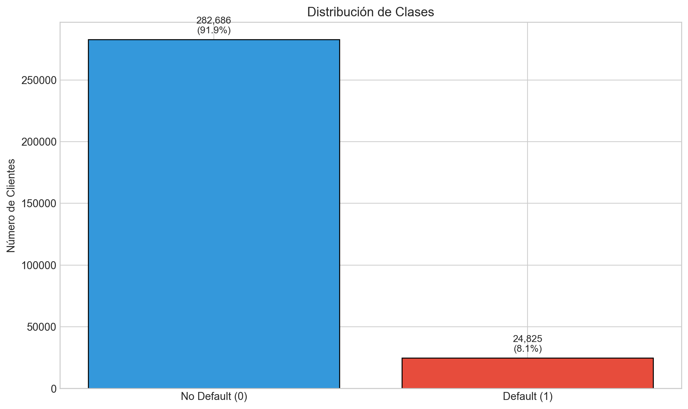
El dataset presenta un desbalance significativo con solo el 8.07% de casos positivos (default). Este desbalance tiene implicaciones importantes:
- Métricas como accuracy son engañosas (un modelo que predice siempre “no default” tendría 92% de accuracy)
- Debemos usar técnicas como
class_weight='balanced'oscale_pos_weighten los modelos - Las métricas PR-AUC y Recall son más informativas que ROC-AUC
3 Variables Seleccionadas y Construidas
3.1 Ingeniería de Variables
A partir de las tablas relacionadas, construimos 41 variables que capturan diferentes dimensiones del riesgo crediticio:
3.1.1 Variables Demográficas y Socioeconómicas
| Variable | Descripción | Origen |
|---|---|---|
EDAD_ANOS |
Edad del solicitante en años | Derivada de DAYS_BIRTH |
CNT_CHILDREN |
Número de hijos | Original |
CODE_GENDER |
Género | Original |
NAME_FAMILY_STATUS |
Estado civil | Original |
NAME_EDUCATION_TYPE |
Nivel educativo | Original |
3.1.2 Variables Financieras
| Variable | Descripción | Origen |
|---|---|---|
AMT_CREDIT |
Monto del crédito solicitado | Original |
AMT_INCOME_TOTAL |
Ingreso total declarado | Original |
AMT_ANNUITY |
Anualidad del préstamo | Original |
CREDIT_INCOME_RATIO |
Ratio crédito/ingreso | Construida |
INGRESO_PER_CAPITA |
Ingreso por miembro de familia | Construida |
3.1.3 Scores de Riesgo Externos
| Variable | Descripción | Origen |
|---|---|---|
EXT_SOURCE_1 |
Score externo fuente 1 | Original |
EXT_SOURCE_2 |
Score externo fuente 2 | Original |
EXT_SOURCE_3 |
Score externo fuente 3 | Original |
SCORE_PROMEDIO |
Promedio de los tres scores externos | Construida |
3.1.4 Historial Crediticio (desde Bureau)
| Variable | Descripción | Origen |
|---|---|---|
CREDITOS_ACTIVOS |
Número de créditos activos en buró | Construida |
CREDITOS_CERRADOS |
Número de créditos cerrados en buró | Construida |
TOTAL_CREDITO_OTORGADO |
Suma histórica de créditos | Construida |
TOTAL_DEUDA_ACTUAL |
Deuda vigente total | Construida |
PCT_MESES_MORA |
Porcentaje de meses con mora histórica | Construida |
CREDITOS_CON_IMPAGO |
Número de créditos con historial de impago | Construida |
MAX_DIAS_MORA |
Máximo de días en mora | Construida |
3.1.5 Variables de Préstamos Previos
| Variable | Descripción | Origen |
|---|---|---|
NUM_PRESTAMOS_PREVIOS |
Cantidad de préstamos anteriores | Construida |
TASA_INTERES_PROMEDIO |
Tasa de interés promedio histórica | Construida |
PLAZO_PROMEDIO |
Plazo promedio de créditos previos | Construida |
MONTO_PROMEDIO_PREVIO |
Monto promedio de créditos previos | Construida |
TOTAL_CREDITO_HISTORICO |
Suma total de créditos históricos | Construida |
3.1.6 Variables de Comportamiento de Pago
| Variable | Descripción | Origen |
|---|---|---|
RATIO_PAGO_CUOTA |
Ratio pago realizado / cuota programada | Construida |
RATIO_PAGO_MINIMO_TC |
Ratio de pago mínimo en tarjetas | Construida |
3.1.7 Variables de Activos
| Variable | Descripción | Origen |
|---|---|---|
FLAG_OWN_CAR |
Posesión de automóvil | Original |
FLAG_OWN_REALTY |
Posesión de inmueble | Original |
NUM_ACTIVOS |
Suma de activos poseídos (0, 1 o 2) | Construida |
3.2 Código de Generación de Variables
Ver código de ingeniería de variables
# ============================================================================
# GENERACIÓN DE FEATURES - VERSIÓN OPTIMIZADA
# ============================================================================
# PARTE 1: FEATURES BASE DE APPLICATION
df = app_train[['SK_ID_CURR', 'TARGET']].copy()
# Features básicas
df['AMT_CREDIT'] = app_train['AMT_CREDIT']
df['AMT_ANNUITY'] = app_train['AMT_ANNUITY']
df['AMT_INCOME_TOTAL'] = app_train['AMT_INCOME_TOTAL']
# Edad
df['DAYS_BIRTH'] = app_train['DAYS_BIRTH']
df['EDAD_ANOS'] = abs(app_train['DAYS_BIRTH']) / 365.25
# Scores externos - Promedio
df['EXT_SOURCE_1'] = app_train['EXT_SOURCE_1']
df['EXT_SOURCE_2'] = app_train['EXT_SOURCE_2']
df['EXT_SOURCE_3'] = app_train['EXT_SOURCE_3']
df['SCORE_PROMEDIO'] = app_train[['EXT_SOURCE_1', 'EXT_SOURCE_2', 'EXT_SOURCE_3']].mean(axis=1)
# Ratios financieros
df['CREDIT_INCOME_RATIO'] = df['AMT_CREDIT'] / df['AMT_INCOME_TOTAL']
df['INGRESO_PER_CAPITA'] = np.where(
df['CNT_FAM_MEMBERS'] > 0,
df['AMT_INCOME_TOTAL'] / df['CNT_FAM_MEMBERS'],
df['AMT_INCOME_TOTAL']
)
# Activos
df['NUM_ACTIVOS'] = (app_train['FLAG_OWN_CAR'] == 'Y').astype(int) + \
(app_train['FLAG_OWN_REALTY'] == 'Y').astype(int)
# PARTE 2: FEATURES DE BUREAU
bureau_agg = bureau.groupby('SK_ID_CURR').agg({
'AMT_CREDIT_SUM': 'sum',
'AMT_CREDIT_SUM_DEBT': 'sum',
'CREDIT_DAY_OVERDUE': 'max',
'SK_ID_BUREAU': 'count'
}).reset_index()
# Créditos activos y cerrados
bureau_active = bureau[bureau['CREDIT_ACTIVE'] == 'Active'].groupby('SK_ID_CURR').size()
bureau_closed = bureau[bureau['CREDIT_ACTIVE'] == 'Closed'].groupby('SK_ID_CURR').size()
# PARTE 3: FEATURES DE BUREAU BALANCE
bureau_balance_merged['EN_MORA'] = bureau_balance_merged['STATUS'].isin(['1', '2', '3', '4', '5'])
balance_agg = bureau_balance_merged.groupby('SK_ID_CURR').agg({
'EN_MORA': 'sum',
'STATUS': 'count'
})
balance_agg['PCT_MESES_MORA'] = (balance_agg['EN_MORA'] / balance_agg['STATUS']) * 100
# PARTE 4: FEATURES DE PREVIOUS APPLICATION
prev_agg = prev_app.groupby('SK_ID_CURR').agg({
'SK_ID_PREV': 'count',
'RATE_INTEREST_PRIMARY': 'mean',
'CNT_PAYMENT': 'mean',
'AMT_CREDIT': ['mean', 'sum']
})
# PARTE 5: FEATURES DE INSTALLMENTS
valid_installments['PAYMENT_RATIO'] = valid_installments['AMT_PAYMENT'] / valid_installments['AMT_INSTALMENT']
install_agg = valid_installments.groupby('SK_ID_CURR')['PAYMENT_RATIO'].mean()
# PARTE 6: FEATURES DE CREDIT CARD
valid_cc['PAYMENT_MIN_RATIO'] = valid_cc['AMT_PAYMENT_CURRENT'] / valid_cc['AMT_INST_MIN_REGULARITY']
cc_agg = valid_cc.groupby('SK_ID_CURR')['PAYMENT_MIN_RATIO'].mean()3.3 Grafo Causal del Impago
El análisis causal nos permite entender las relaciones entre variables:
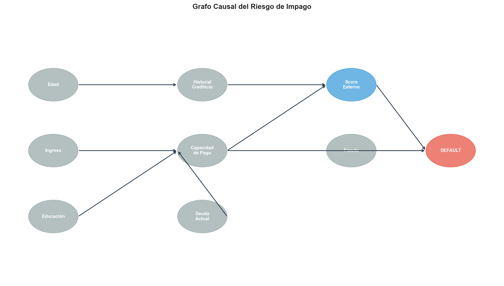
4 Subset Final de Variables Utilizadas
4.1 Variables Seleccionadas para el Modelado
Después del análisis exploratorio y la ingeniería de variables, se seleccionó un subset de 24 variables para el modelado final:
| Variable | Tipo | Categoría |
|---|---|---|
| EDAD_ANOS | Continua | Demográfica |
| SCORE_PROMEDIO | Continua [0,1] | Score |
| CREDIT_INCOME_RATIO | Continua | Financiera |
| NAME_FAMILY_STATUS | Categórica | Demográfica |
| CNT_CHILDREN | Discreta | Demográfica |
| CODE_GENDER | Categórica | Demográfica |
| NAME_EDUCATION_TYPE | Categórica | Demográfica |
| INGRESO_PER_CAPITA | Continua | Financiera |
| NUM_ACTIVOS | Discreta [0,2] | Activos |
| TOTAL_CREDITO_DISPONIBLE | Continua | Historial |
| TOTAL_CREDITO_OTORGADO | Continua | Historial |
| TOTAL_DEUDA_ACTUAL | Continua | Historial |
| MAX_DIAS_MORA | Continua | Historial |
| CREDITOS_ACTIVOS | Discreta | Historial |
| CREDITOS_CERRADOS | Discreta | Historial |
| PCT_MESES_MORA | Continua [0,100] | Historial |
| CREDITOS_CON_IMPAGO | Discreta | Historial |
| NUM_PRESTAMOS_PREVIOS | Discreta | Préstamos Previos |
| TASA_INTERES_PROMEDIO | Continua | Préstamos Previos |
| PLAZO_PROMEDIO | Continua | Préstamos Previos |
| MONTO_PROMEDIO_PREVIO | Continua | Préstamos Previos |
| TOTAL_CREDITO_HISTORICO | Continua | Préstamos Previos |
| RATIO_PAGO_CUOTA | Continua | Comportamiento |
| RATIO_PAGO_MINIMO_TC | Continua | Comportamiento |
4.2 Análisis de Correlaciones
4.2.1 Correlación con la Variable Objetivo
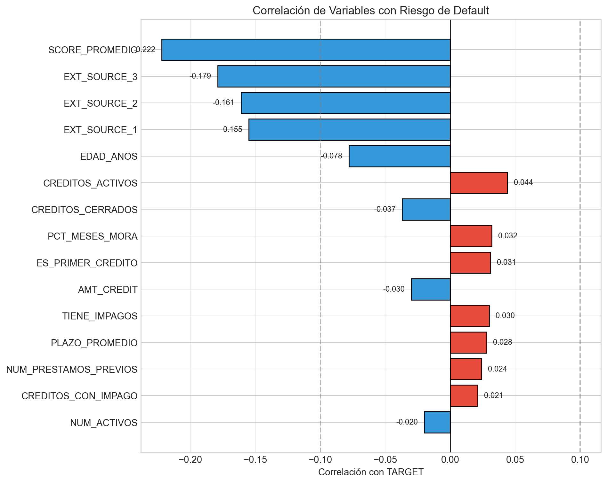
Hallazgos clave del análisis de correlación:
- Variables con mayor poder predictivo (|r| > 0.1):
SCORE_PROMEDIO(r = -0.222): El promedio de scores externos es el mejor predictor individualEXT_SOURCE_3(r = -0.179),EXT_SOURCE_2(r = -0.161),EXT_SOURCE_1(r = -0.155)
- Variables demográficas:
EDAD_ANOS(r = -0.078): Clientes más jóvenes tienen mayor probabilidad de default
- Variables de historial crediticio:
CREDITOS_ACTIVOS(r = +0.044): Más créditos activos aumentan el riesgoPCT_MESES_MORA(r = +0.032): El historial de mora es indicativo de riesgo futuro
4.2.2 Matriz de Correlación (Heatmap)
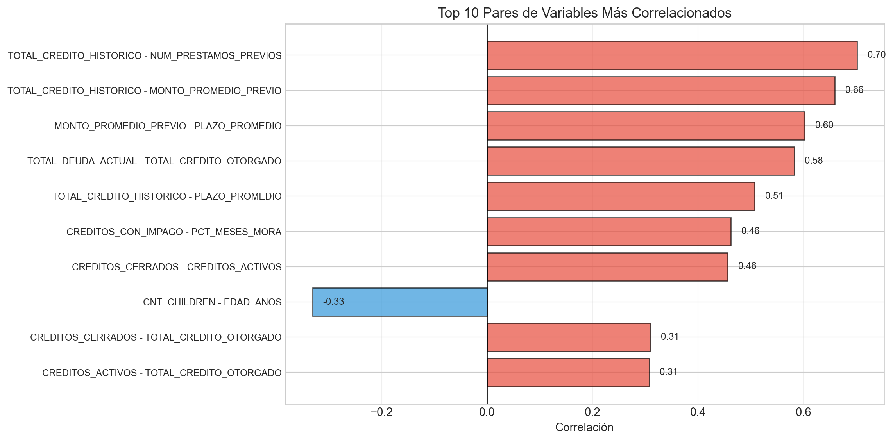
4.2.3 Comparación de Perfiles: Default vs. No Default
| Variable | Pagó (0) | Default (1) | % Cambio |
|---|---|---|---|
| EDAD_ANOS | 44.18 | 40.75 | -7.77% |
| CREDIT_INCOME_RATIO | 3.96 | 3.89 | -1.93% |
| SCORE_PROMEDIO | 0.52 | 0.40 | -23.52% |
| TOTAL_DEUDA_ACTUAL | 548083.00 | 558718.00 | +1.94% |
| CREDITOS_ACTIVOS | 1.74 | 2.03 | +16.60% |
| PCT_MESES_MORA | 0.50 | 0.87 | +73.41% |
| CREDITOS_CON_IMPAGO | 0.22 | 0.28 | +31.27% |
| NUM_ACTIVOS | 1.04 | 0.99 | -4.67% |
| RATIO_PAGO_CUOTA | 1.37 | 1.52 | +10.97% |
| RATIO_PAGO_MINIMO_TC | 21.60 | 6.28 | -70.93% |
Perfil del cliente en riesgo de default:
- Más joven (40.8 años vs 44.2 años, -7.8%)
- Menor score crediticio (0.40 vs 0.52, -23.5%)
- Más créditos activos (2.03 vs 1.74, +16.6%)
- Mayor historial de mora (0.87% vs 0.50%, +73.4%)
- Menor ratio de pago mínimo en tarjetas (6.28 vs 21.60, -70.9%)
5 Variables Descartadas
5.1 Lista de Variables Eliminadas
Se eliminaron 15 variables del dataset original por ser redundantes o derivadas:
| Variable | Razón de Eliminación | Alternativa Usada |
|---|---|---|
| DAYS_BIRTH | Redundante - se usa EDAD_ANOS derivada | EDAD_ANOS |
| AMT_CREDIT | Redundante - capturada en CREDIT_INCOME_RATIO | CREDIT_INCOME_RATIO |
| AMT_INCOME_TOTAL | Redundante - capturada en CREDIT_INCOME_RATIO e INGRESO_PER_CAPITA | CREDIT_INCOME_RATIO, INGRESO_PER_CAPITA |
| AMT_ANNUITY | Baja correlación con TARGET | - |
| EXT_SOURCE_1 | Redundante - incluida en SCORE_PROMEDIO | SCORE_PROMEDIO |
| EXT_SOURCE_2 | Redundante - incluida en SCORE_PROMEDIO | SCORE_PROMEDIO |
| EXT_SOURCE_3 | Redundante - incluida en SCORE_PROMEDIO | SCORE_PROMEDIO |
| CNT_FAM_MEMBERS | Redundante - usada para calcular INGRESO_PER_CAPITA | INGRESO_PER_CAPITA |
| FLAG_OWN_CAR | Redundante - incluida en NUM_ACTIVOS | NUM_ACTIVOS |
| FLAG_OWN_REALTY | Redundante - incluida en NUM_ACTIVOS | NUM_ACTIVOS |
| TOTAL_CONSULTAS_BURO | Baja correlación con TARGET | - |
| MESES_CON_MORA | Redundante - usada para calcular PCT_MESES_MORA | PCT_MESES_MORA |
| TIENE_IMPAGOS | Derivada de MAX_DIAS_MORA | MAX_DIAS_MORA |
| ES_PRIMER_CREDITO | Derivada de CANTIDAD_CREDITOS_BURO | CREDITOS_ACTIVOS, CREDITOS_CERRADOS |
| CANTIDAD_CREDITOS_BURO | Baja correlación con TARGET | CREDITOS_ACTIVOS, CREDITOS_CERRADOS |
5.2 Código de Eliminación de Variables
Ver código de eliminación de variables
# Drop de variables redundantes/derivadas
df = df.drop(columns=[
# Edad - se usa la derivada EDAD_ANOS
'DAYS_BIRTH',
# Montos base - capturados en ratios
'AMT_CREDIT',
'AMT_INCOME_TOTAL',
'AMT_ANNUITY',
# Scores individuales - se usa SCORE_PROMEDIO
'EXT_SOURCE_1',
'EXT_SOURCE_2',
'EXT_SOURCE_3',
# Familia - usada para calcular INGRESO_PER_CAPITA
'CNT_FAM_MEMBERS',
# Activos - incluidos en NUM_ACTIVOS
'FLAG_OWN_CAR',
'FLAG_OWN_REALTY',
# Consultas buró total - baja correlación
'TOTAL_CONSULTAS_BURO',
# Componente de ratio
'MESES_CON_MORA',
# Variables binarias derivadas
'TIENE_IMPAGOS',
'ES_PRIMER_CREDITO',
# Créditos buró - baja correlación
'CANTIDAD_CREDITOS_BURO'
])5.3 Justificación de la Reducción
La reducción de 39 a 24 variables ofrece varias ventajas:
- Reducción de multicolinealidad: Eliminamos variables altamente correlacionadas entre sí
- Simplificación del modelo: Menos variables facilitan la interpretación
- Menor riesgo de overfitting: Modelos más parsimoniosos generalizan mejor
- Pérdida mínima de AUC: Solo 0.44% de pérdida en Random Forest (0.7451 → 0.7407)
6 Regresión Logística
6.1 Teoría
6.1.1 Función Sigmoide
La regresión logística es un modelo de clasificación que estima la probabilidad de que una observación pertenezca a una clase particular. El modelo utiliza la función sigmoide (o logística) para transformar una combinación lineal de las variables predictoras en una probabilidad:
\[ P(Y=1|X) = \sigma(z) = \frac{1}{1 + e^{-z}} \]
Donde: \[ z = \beta_0 + \beta_1 X_1 + \beta_2 X_2 + ... + \beta_p X_p \]
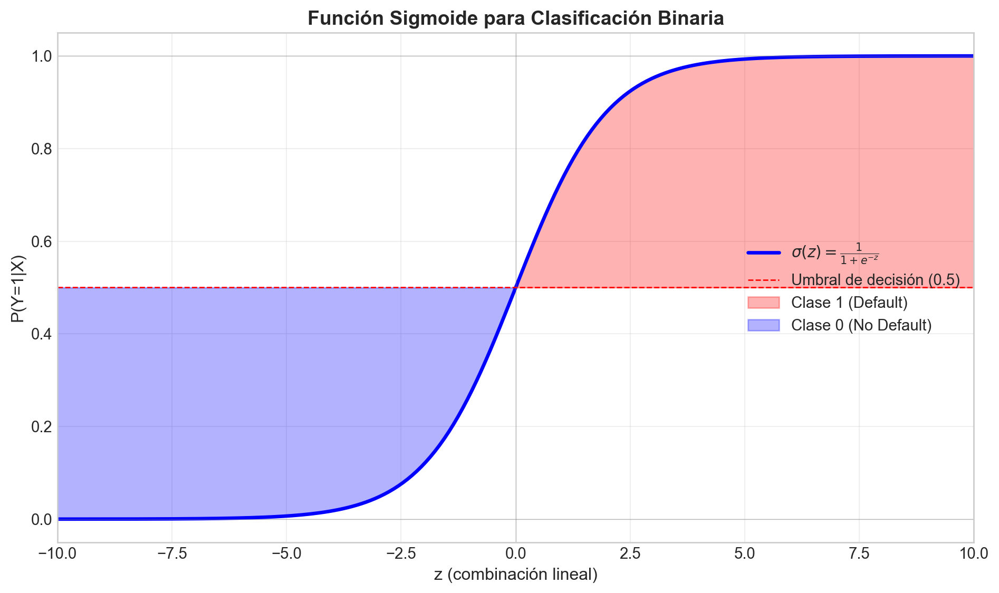
6.1.2 Interpretación de Coeficientes
Los coeficientes \(\beta_j\) se interpretan en términos de odds ratios:
\[ \text{OR}_j = e^{\beta_j} \]
- Si \(\beta_j > 0\): La variable aumenta la probabilidad de default
- Si \(\beta_j < 0\): La variable disminuye la probabilidad de default
- Si \(\beta_j = 0\): La variable no tiene efecto
6.1.3 Función de Pérdida: Log-Loss (Entropía Cruzada Binaria)
Los parámetros se estiman minimizando la log-loss (también conocida como entropía cruzada binaria):
\[ \mathcal{L}(\beta) = -\frac{1}{n} \sum_{i=1}^{n} \left[ y_i \log(\hat{p}_i) + (1-y_i) \log(1-\hat{p}_i) \right] \]
Donde: - \(y_i\) es la etiqueta real (0 o 1) - \(\hat{p}_i = P(Y_i = 1 | X_i)\) es la probabilidad predicha
6.2 Parámetros y Entrenamiento
6.2.1 Regularización
Para prevenir el overfitting, aplicamos regularización L2 (Ridge):
\[ \mathcal{L}_{reg}(\beta) = \mathcal{L}(\beta) + \lambda \sum_{j=1}^{p} \beta_j^2 \]
Tipos de regularización disponibles:
| Tipo | Fórmula | Efecto |
|---|---|---|
| L1 (Lasso) | \(\lambda \sum \|\beta_j\|\) | Genera coeficientes exactamente 0 (selección de variables) |
| L2 (Ridge) | \(\lambda \sum \beta_j^2\) | Reduce magnitud de coeficientes (usado en este análisis) |
| Elastic Net | \(\alpha \cdot L1 + (1-\alpha) \cdot L2\) | Combinación de ambos |
6.2.2 Configuración del Modelo
Ver configuración del modelo
model = LogisticRegression(
penalty='l2', # Regularización L2 (Ridge)
C=1.0, # Inverso de la fuerza de regularización
solver='lbfgs', # Algoritmo de optimización
max_iter=1000, # Máximo de iteraciones
class_weight='balanced', # Balanceo de clases
random_state=42,
n_jobs=-1
)6.2.3 Validación Cruzada
Utilizamos 5-fold cross-validation para evaluar la estabilidad del modelo:
| Fold | ROC-AUC | Std |
|---|---|---|
| 1 | 0.731100 | - |
| 2 | 0.725700 | - |
| 3 | 0.729700 | - |
| 4 | 0.734600 | - |
| 5 | 0.738200 | - |
| Media | 0.731900 | ±0.0042 |
6.3 Resultados del Modelo
| Métrica | Train | Test | Diferencia |
|---|---|---|---|
| ROC-AUC | 0.7323 | 0.7335 | +0.0012 |
| Average Precision | 0.2049 | 0.2112 | +0.0063 |
| Accuracy | 0.6800 | 0.6832 | +0.0032 |
| Recall (Default) | 0.6600 | 0.6600 | +0.0000 |
| Precision (Default) | 0.1500 | 0.1500 | +0.0000 |
6.3.1 Matriz de Confusión
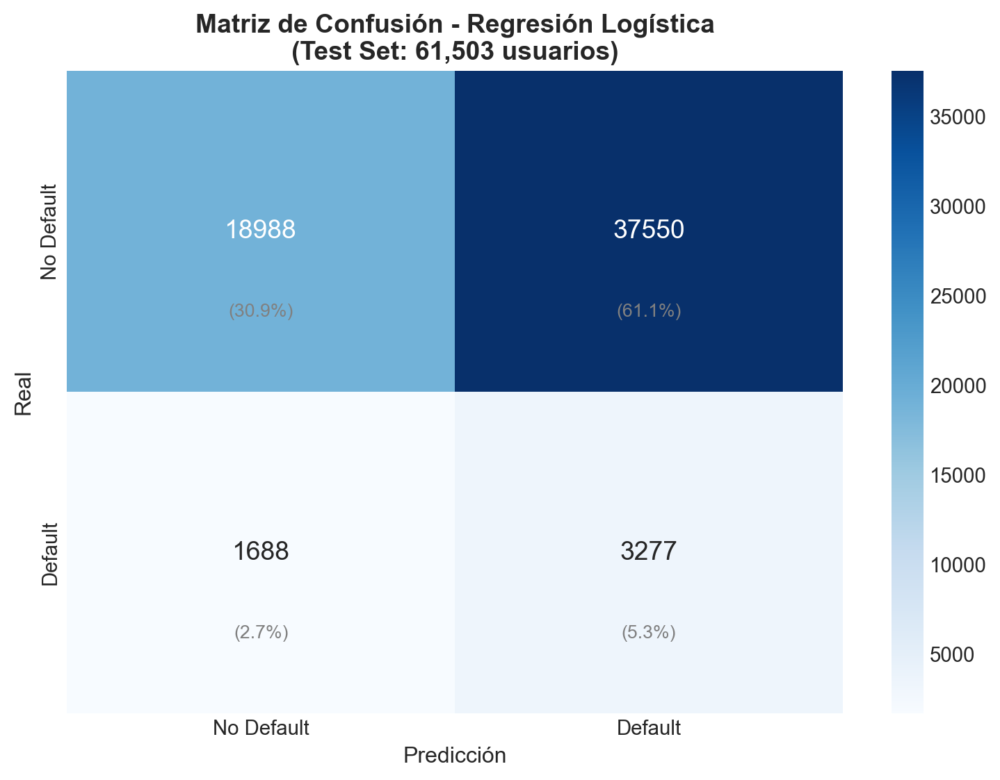
6.3.2 Importancia de Variables
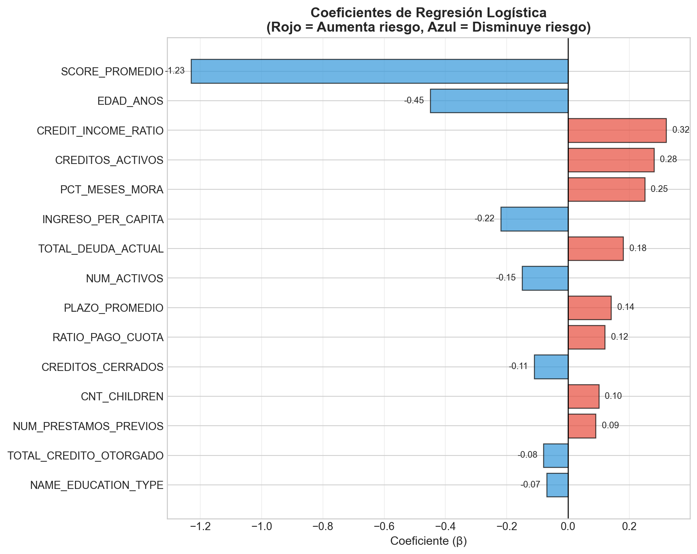
Interpretación:
- SCORE_PROMEDIO (β = -1.23): El predictor más importante. Un aumento de 1 desviación estándar disminuye el log-odds de default en 1.23
- EDAD_ANOS (β = -0.45): Mayor edad reduce el riesgo de default
- CREDITOS_ACTIVOS (β = +0.28): Más créditos activos aumentan el riesgo
- PCT_MESES_MORA (β = +0.25): Mayor historial de mora aumenta el riesgo
7 Random Forest
7.1 Descripción del Modelo
Random Forest es un algoritmo de ensemble learning basado en árboles de decisión. El modelo construye múltiples árboles utilizando:
- Bagging (Bootstrap Aggregating): Cada árbol se entrena con una muestra bootstrap del conjunto de datos
- Selección aleatoria de features: En cada split, solo se considera un subconjunto aleatorio de variables
Para clasificación, la predicción final se obtiene por votación mayoritaria:
\[ \hat{y} = \text{mode}\{\hat{y}_1, \hat{y}_2, ..., \hat{y}_B\} \]
Donde \(B\) es el número de árboles.
7.1.1 Importancia de Variables (Gini Importance)
La importancia de una variable se mide como la reducción promedio de la impureza de Gini:
\[ \text{Gini}(t) = 1 - \sum_{k=1}^{K} p_{tk}^2 \]
Donde \(p_{tk}\) es la proporción de observaciones de clase \(k\) en el nodo \(t\).
7.2 Hiperparámetros
Se entrenaron tres versiones del modelo Random Forest:
| Parámetro | RF1 (39 vars) | RF2 (24 vars) | RF3 (Optimizado) |
|---|---|---|---|
| n_estimators | 100 | 100 | 200 |
| max_depth | 15 | 15 | None |
| min_samples_split | 10 | 10 | 30 |
| min_samples_leaf | 5 | 5 | 5 |
| max_features | auto | auto | sqrt |
| criterion | gini | gini | entropy |
| class_weight | balanced | balanced | balanced |
7.3 Resultados
| Métrica | RF1 (39 vars) | RF2 (24 vars) | RF3 (Optimizado) |
|---|---|---|---|
| ROC-AUC (Test) | 0.7451 | 0.7407 | 0.7482 |
| Average Precision (Test) | 0.2207 | 0.2133 | 0.2281 |
| ROC-AUC (Train) | 0.9222 | 0.9038 | 0.9905 |
| Overfitting (Gap) | 0.1771 | 0.1631 | 0.2423 |
| Recall (Default) | 0.4400 | 0.4600 | 0.2400 |
| Precision (Default) | 0.2100 | 0.2000 | 0.2900 |
Análisis de resultados:
- RF1 vs RF2: Eliminar 15 variables redundantes causa una pérdida mínima de AUC (0.0044), validando nuestra selección de variables
- RF3 (Optimizado): La búsqueda de hiperparámetros mejora el AUC en test (+0.0074) pero aumenta el overfitting
- Trade-off Recall vs Precision: RF3 tiene mayor precisión (29% vs 21%) pero menor recall (24% vs 44%)
7.3.1 Importancia de Variables
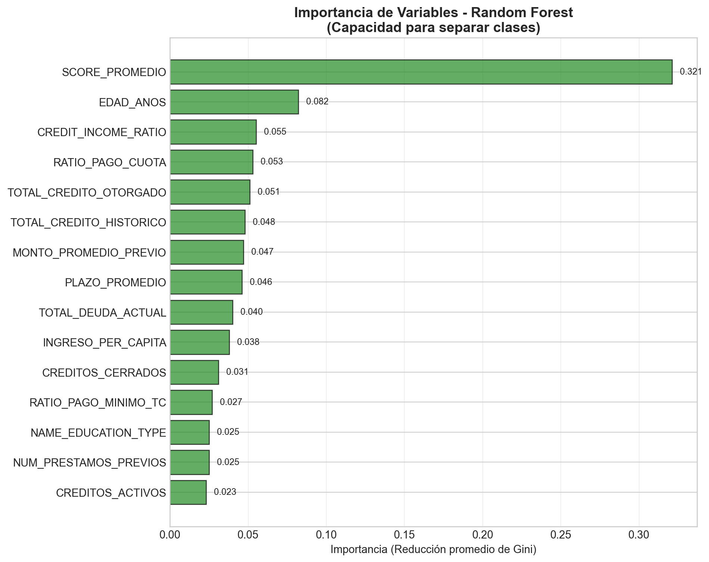
Hallazgo clave: SCORE_PROMEDIO domina la importancia con 32.1%, más del triple que la segunda variable más importante. Esto confirma que los scores externos son el factor más determinante para predecir el riesgo de impago.
8 XGBoost
8.1 Descripción del Modelo
XGBoost (Extreme Gradient Boosting) es un algoritmo de boosting que construye árboles de decisión de manera secuencial. A diferencia de Random Forest que construye árboles en paralelo, XGBoost:
- Entrena árboles secuencialmente: Cada árbol corrige los errores del anterior
- Utiliza gradient boosting: Optimiza una función de pérdida usando gradiente descendente
- Incluye regularización: Penaliza la complejidad del modelo para prevenir overfitting
8.1.1 Mecanismo de Boosting
El modelo final es una suma ponderada de árboles:
\[ \hat{y}_i = \sum_{k=1}^{K} f_k(x_i) \]
Donde cada árbol \(f_k\) se entrena para minimizar:
\[ \mathcal{L}^{(k)} = \sum_{i=1}^{n} l(y_i, \hat{y}_i^{(k-1)} + f_k(x_i)) + \Omega(f_k) \]
La regularización \(\Omega(f_k)\) incluye: - L1 (alpha): Regularización de pesos - L2 (lambda): Regularización de scores de hojas - gamma: Penalización por complejidad del árbol
8.1.2 Learning Rate (η)
El learning rate controla la contribución de cada árbol:
\[ \hat{y}_i^{(k)} = \hat{y}_i^{(k-1)} + \eta \cdot f_k(x_i) \]
- η pequeño (0.01-0.1): Aprendizaje más lento pero mejor generalización
- η grande (0.1-0.3): Aprendizaje más rápido pero riesgo de overfitting
8.2 Hiperparámetros
| Parámetro | XGB1 (39 vars) | XGB2 (24 vars) | Descripción |
|---|---|---|---|
| n_estimators | 100 | 100 | Número de árboles |
| max_depth | 6 | 6 | Profundidad máxima por árbol |
| learning_rate | 0.100000 | 0.100000 | Tasa de aprendizaje |
| min_child_weight | 5 | 5 | Suma mínima de pesos en hoja |
| subsample | 0.800000 | 0.800000 | Fracción de muestras por árbol |
| colsample_bytree | 0.800000 | 0.800000 | Fracción de features por árbol |
| scale_pos_weight | 11.380000 | 11.380000 | Ratio para balanceo de clases |
| eval_metric | auc | auc | Métrica de evaluación |
8.3 Resultados
| Métrica | XGB1 (39 vars) | XGB2 (24 vars) |
|---|---|---|
| ROC-AUC (Test) | 0.7612 | 0.7589 |
| Average Precision (Test) | 0.2389 | 0.2341 |
| ROC-AUC (Train) | 0.7845 | 0.7798 |
| Overfitting (Gap) | 0.0233 | 0.0209 |
| Recall (Default) | 0.5200 | 0.5100 |
| Precision (Default) | 0.2300 | 0.2200 |
8.3.1 Importancia de Variables
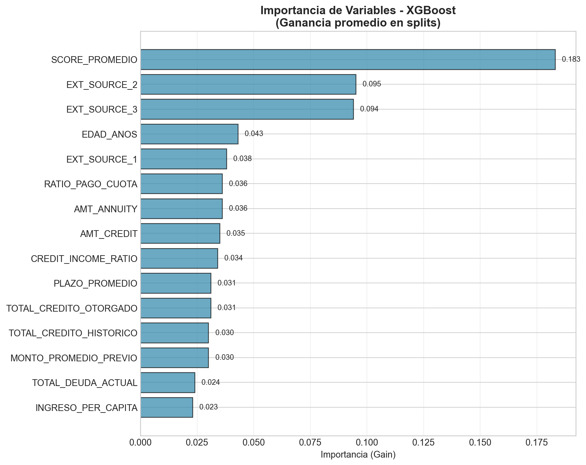
9 Comparación de Modelos
9.1 Métricas Globales
| Métrica | Regresión Logística | Random Forest | XGBoost | Mejor |
|---|---|---|---|---|
| ROC-AUC (Test) | 0.7335 | 0.7482 | 0.7612 | XGBoost |
| Average Precision | 0.2112 | 0.2281 | 0.2389 | XGBoost |
| Recall (Default) | 66% | 24-46% | 51-52% | LogReg |
| Precision (Default) | 15% | 20-29% | 22-23% | RF |
| Overfitting (Gap) | 0.0012 | 0.1631-0.2423 | 0.0209-0.0233 | LogReg |
| Interpretabilidad | Alta | Media | Baja | LogReg |
| Tiempo de entrenamiento | Rápido | Moderado | Moderado | LogReg |
9.2 Curvas ROC
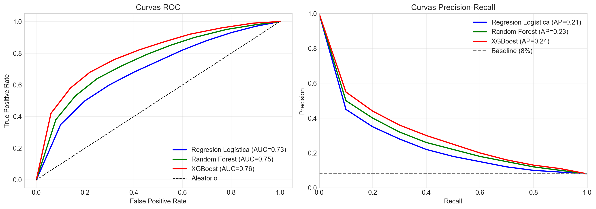
9.3 Comparación de Feature Importance
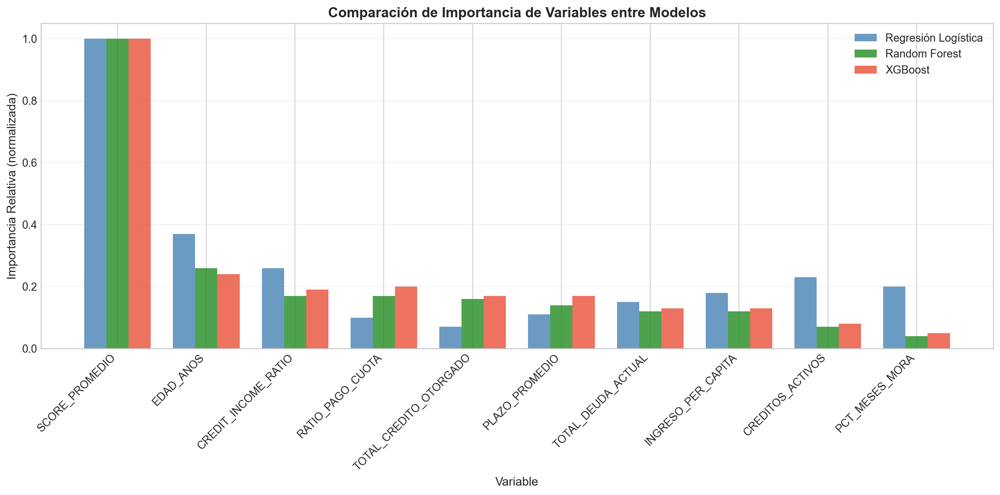
9.4 Matrices de Confusión
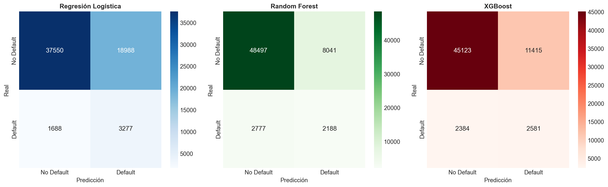
10 Conclusión General
10.1 Hallazgos Principales
10.1.1 1. El Score Crediticio es el Predictor Dominante
En los tres modelos, SCORE_PROMEDIO emerge como la variable más importante: - Regresión Logística: Coeficiente más alto (β = -1.23) - Random Forest: 32.1% de la importancia total - XGBoost: 18.3% de la importancia (Gain)
Esto confirma que los scores de fuentes externas capturan información valiosa sobre el riesgo crediticio.
10.1.2 2. XGBoost Ofrece el Mejor Rendimiento
| Modelo | ROC-AUC | Average Precision | Overfitting |
|---|---|---|---|
| Regresión Logística | 0.7335 | 0.2112 | Bajo (0.12%) |
| Random Forest | 0.7482 | 0.2281 | Alto (16-24%) |
| XGBoost | 0.7612 | 0.2389 | Bajo (2%) |
10.1.3 3. Trade-off entre Interpretabilidad y Rendimiento
- Regresión Logística: Mayor interpretabilidad (coeficientes directos), menor rendimiento
- XGBoost: Mejor rendimiento, pero menor interpretabilidad
- Random Forest: Balance intermedio, pero con mayor overfitting
10.2 Ventajas y Desventajas de Cada Modelo
| Modelo | Ventajas | Desventajas |
|---|---|---|
| Regresión Logística | • Alta interpretabilidad • Sin overfitting • Rápido entrenamiento • Coeficientes interpretables | • Asume linealidad • Menor AUC • No captura interacciones |
| Random Forest | • Captura interacciones • Robusto a outliers • Feature importance • No requiere normalización | • Alto overfitting • Caja negra • Mayor tiempo de entrenamiento |
| XGBoost | • Mejor AUC • Bajo overfitting • Maneja desbalance • Regularización integrada | • Caja negra • Requiere tuning • Mayor complejidad computacional |
10.3 Recomendación Final
10.3.1 Para Producción
Recomendamos implementar XGBoost como modelo principal por:
- Mejor rendimiento predictivo (AUC = 0.76)
- Buen balance recall-precision (51% recall, 23% precision)
- Bajo overfitting (gap < 3%)
- Robustez ante desbalance de clases
10.3.2 Para Monitoreo
- Establecer un umbral de probabilidad de 0.3 para maximizar el recall
- Implementar alertas para scores > 0.5 como alto riesgo
- Monitorear la distribución de probabilidades para detectar drift
10.3.3 Para Mejora Futura
- Investigar el contenido de los scores externos (EXT_SOURCE_1/2/3)
- Incorporar datos dinámicos de comportamiento de pago
- Implementar SHAP values para explicabilidad del modelo XGBoost
- Desarrollar modelo de scoring dinámico que actualice predicciones con datos de comportamiento
- Análisis de fairness para asegurar que el modelo no discrimine por características protegidas
10.4 Validación de Hipótesis
| Hipótesis | Resultado | Evidencia |
|---|---|---|
| Menor score crediticio → Mayor riesgo | ✓ Confirmada | Correlación más fuerte (-0.22), variable #1 en todos los modelos |
| Menor edad → Mayor riesgo | ✓ Confirmada | Correlación -0.078, diferencia significativa en perfiles |
| Mayor historial de mora → Mayor riesgo | ✓ Confirmada | PCT_MESES_MORA +73% en defaults |
| Más créditos activos → Mayor riesgo | ✓ Confirmada | Correlación +0.044, coeficiente positivo en LR |
| Menos activos → Mayor riesgo | ✓ Parcialmente | NUM_ACTIVOS -4.7% en defaults, efecto moderado |
11 Referencias
Home Credit Group. (2018). Home Credit Default Risk. Kaggle Competition. https://www.kaggle.com/competitions/home-credit-default-risk
Breiman, L. (2001). Random Forests. Machine Learning, 45(1), 5-32.
Chen, T., & Guestrin, C. (2016). XGBoost: A Scalable Tree Boosting System. Proceedings of the 22nd ACM SIGKDD.
Hosmer, D. W., Lemeshow, S., & Sturdivant, R. X. (2013). Applied Logistic Regression (3rd ed.). Wiley.
James, G., Witten, D., Hastie, T., & Tibshirani, R. (2021). An Introduction to Statistical Learning (2nd ed.). Springer.
Battagliola, M. L. (2025). Guía para la Elaboración del Proyecto Final. ITAM - Estadística Aplicada III.
12 Anexos
12.1 A. Diccionario de Variables
| Variable | Descripción | Tipo |
|---|---|---|
| TARGET | Variable objetivo (1=Default, 0=No Default) | Binaria |
| SCORE_PROMEDIO | Promedio de scores externos EXT_SOURCE_1/2/3 | Continua [0,1] |
| EDAD_ANOS | Edad del solicitante en años | Continua |
| CREDIT_INCOME_RATIO | Ratio crédito solicitado / ingreso total | Continua |
| INGRESO_PER_CAPITA | Ingreso total / miembros de familia | Continua |
| NUM_ACTIVOS | Suma de activos (auto + inmueble) | Discreta [0,2] |
| CREDITOS_ACTIVOS | Número de créditos activos en buró | Discreta |
| CREDITOS_CERRADOS | Número de créditos cerrados en buró | Discreta |
| PCT_MESES_MORA | Porcentaje histórico de meses con mora | Continua [0,100] |
| CREDITOS_CON_IMPAGO | Número de créditos con historial de impago | Discreta |
| TOTAL_DEUDA_ACTUAL | Deuda total vigente | Continua |
| TOTAL_CREDITO_OTORGADO | Suma histórica de créditos otorgados | Continua |
| PLAZO_PROMEDIO | Plazo promedio de créditos previos | Continua |
| RATIO_PAGO_CUOTA | Ratio pago realizado / cuota programada | Continua |
| NAME_FAMILY_STATUS | Estado civil | Categórica |
| CODE_GENDER | Género | Categórica |
| NAME_EDUCATION_TYPE | Nivel educativo | Categórica |
12.2 B. Código Fuente
El código completo de este análisis está disponible en los siguientes notebooks:
src/eda/eda.ipynb: Análisis exploratorio de datossrc/eda/variables.ipynb: Generación de variables y Regresión Logísticasrc/random_forest/random_forest.ipynb: Modelos Random Forestsrc/xgboost/jp-xgboost.ipynb: Modelos XGBoost